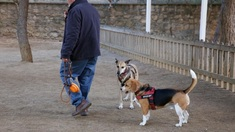

Perruneros
Un fármaco para que los perros no sufran con los fuegos artificiales.
Un equipo de la Universidad de Pensilvania ofrece un tratamiento médico como solución a los temblores de sus perros, para aliviar el nerviosismo y el estrés ante estos ruidos que tantas consultas veterinarias generan.
La vacuna española contra la leishmaniosis canina se distribuirá en Europa.
Los laboratorios españoles mantendrán la distribución en España y Portugal de esta vacuna, comercializada con el nombre de Letifend y destinada a combatir una enfermedad que sólo en España afecta a unos 785.000 perros.
Descubren en Euskadi los restos más antiguos de perro doméstico en Europa.

El equipo afirma que el análisis morfológico, radiométrico y genético permite confirmar la identificación genética de la especie como Canis lupus familiaris (perro doméstico), con una datación que oscila entre 17.410 y 17.096 años atrás.
Barcelona multará por pasear a perros sin correa en la calle dentro de un año.

La medida no será efectiva hasta diciembre de 2023, cuando se empezará a sancionar a los propietarios que acudan sin la mascota atada a una de las 219 zonas reservadas que se habilitarán. Las multas oscilarían de entre 100 a 2.400 euros.